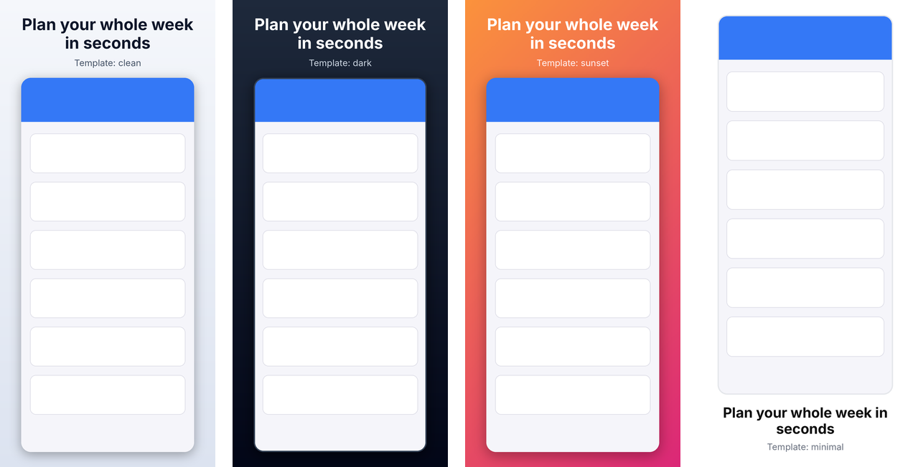
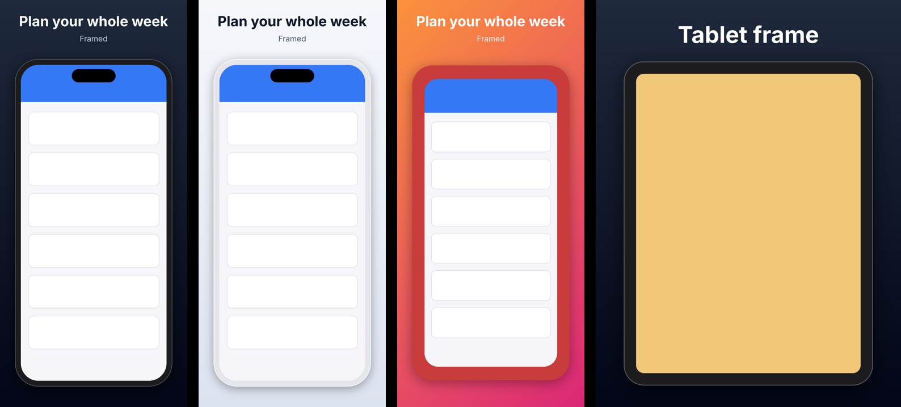
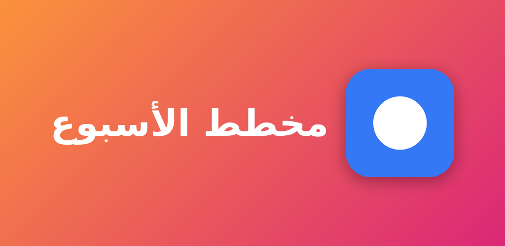
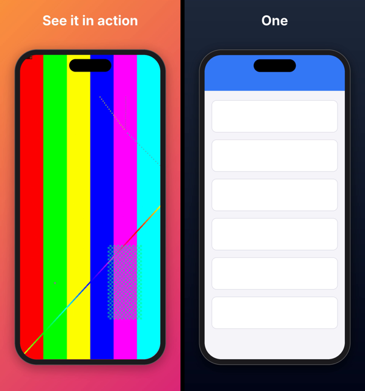

app-preview
A command-line tool that turns raw app screenshots and screen recordings into App Store and Google Play assets that pass store validation the first time. It works the same for developers at a terminal and for AI agents.
pipx install app-preview
app-preview generate raw/*.png -t apple.iphone-6.9 -t google.phone --template dark --caption "Plan your week"store targets
Every App Store and Google Play screenshot, preview video, graphic and icon spec, from the official pages.
Validate
Size, format, transparency, color mode, file size, counts, video codec and length, each with a stable code and a fix.
Marketing screenshots
Captions, gradients and device frames that scale to every device and orientation.
Whole listings
One app-preview.yaml renders every screen × device × language.
App previews
Convert recordings or build slideshows that meet Apple's encoding rules.
Agent-ready
--json everywhere, stable exit codes, and a built-in MCP server.

Install
pipx install app-preview # or: uv tool install app-preview
uvx app-preview --help # run once without installing
pipx install "app-preview[mcp]" # include the MCP server for AI agents- Python 3.10 or newer. Dependencies (Pillow, click, PyYAML, pydantic) install automatically.
- Homebrew:
brew install pipx && pipx install app-preview. - From source:
pipx install git+https://github.com/Dev101911/AppPreviewGenerator. - Optional tools:
ffmpegfor videos; Xcode (iOS) oradb(Android) for capture.
Check it works with app-preview --version and app-preview targets.
Quickstart
1. Pick your targets
A target is a store plus a device class. For a typical iOS and Android app, start with:
app-preview targets --store apple # apple.iphone-6.9, apple.ipad-13, ...
app-preview targets google.phone # full rules for one target2. Check what you have
app-preview identify shots/home.png # which targets does it already fit?
app-preview validate shots/*.png -t apple.iphone-6.93. Make compliant copies
app-preview generate shots/*.png -t apple.iphone-6.9 -t apple.ipad-13 -t google.phone -o store-assetsFiles land in store-assets/<target>/01_home.png and are validated again after writing.
4. Make them look like a store listing
app-preview generate shots/home.png shots/list.png -t apple.iphone-6.9 \
--template sunset --frame phone --caption "Plan your week" --caption "Lists that sort themselves"5. Scale up with a config file
app-preview init # writes a commented app-preview.yaml
app-preview build # every screen × target × locale, validatedCore concepts
Targets
Each target records what a store accepts for one slot: exact pixel sizes (Apple) or size rules (Google), formats, whether transparency is allowed, the file-size limit, how many images a set may have, and whether templates and frames are allowed. Target IDs look like apple.iphone-6.9, apple.ipad-13-preview or google.feature-graphic. The full list is in the targets reference.
Targets have a kind:
screenshot: images that need exact sizes or size rules.video: App Store app previews; IDs end in-preview.graphic: the Play feature graphic and TV banner.icon: app icons.
Validate, then generate
validate reports every problem with a file and changes nothing. generate writes new files that fit the target, then validates its own output, so a successful run means the files will be accepted. Most validation errors include a fix that is simply a generate command.
Output for people and machines
Every command prints readable text by default. Add --json and stdout carries exactly one JSON document instead. Exit codes are stable: 0 means success, 1 means validation failed, 2 means a usage or input error (details).
Store specs are data
The rules live in JSON files with their source URLs and the date they were last verified. A weekly check compares them with the stores' published pages (more).
Validating
app-preview validate shots/*.png -t apple.iphone-6.9FAIL shots/home.png 1179x2556 png
error: [alpha] Image has an alpha channel; this target does not allow transparency
fix: Run `app-preview generate shots/home.png --target apple.iphone-6.9` to produce a compliant copy.
error: [dimensions] 1179x2556 is not an accepted size; expected one of 1320x2868, 1290x2796, ...
apple.iphone-6.9: 1 file(s), 2 error(s), 0 warning(s)What is checked for images:
- Size: exact pixel sizes for Apple; shortest and longest side, maximum aspect ratio and allowed aspect ratios for Google.
- Format: PNG or JPEG, detected from the file content rather than the extension.
- Transparency and color: no alpha channel where a store forbids it (all screenshots, App Store icons); RGB color mode.
- Set rules: file-size limits, set counts (too many is an error, too few a warning), one size per Apple Watch set, a warning for mixed orientation.
- Google Play promotion: warnings when you miss the 1080 px, 9:16/16:9 and 4-screenshot recommendations.
Videos get their own checks; see App preview videos. To find out which targets a file already satisfies, use app-preview identify FILE.
Generating screenshots
app-preview generate raw/*.png -t apple.iphone-6.9 -t google.phone -o out --mode fit --background auto- Size selection. An exact match is kept. Otherwise the tool picks the target size in the source's orientation with the closest aspect ratio, preferring the largest size. Force a size with
--size 1290x2796. - Modes.
fitletterboxes onto--background;fillscales to cover and center-crops;stretchdistorts to the exact size. - Background. A color name,
#RRGGBB, orauto, which averages the image's edge color for seamless letterboxing. It is also used to flatten transparency. - Output.
OUT/<target>/NN_<name>.png(or.jpgwith--format jpeg). Use--layoutfor upload-ready folders. - Warnings. You're warned when a source is upscaled more than 1.5× or letterboxed, which usually means a better source image would help.
- Dry run.
--dry-runreports every output without writing anything.
Templates and captions
A template puts the screenshot on a styled canvas with a caption and optional subtitle. Every size is a fraction of the canvas's shorter side, so one template works for iPhone, iPad, landscape and Google sizes alike. Captions wrap, shrink to fit, and are cut off with a warning only if they still don't fit at the minimum size.
app-preview templates # list built-ins
app-preview templates dark # every setting of one template
app-preview generate shot.png -t apple.iphone-6.9 --template sunset --caption "Plan your week" --subtitle "In seconds"Custom templates
Write YAML, usually extending a built-in and changing a few settings:
# brand.yaml
extends: dark
background:
gradient: {from: "#4F46E5", to: "#0EA5E9", angle: 135} # or {color: ...} or {image: bg.png}
caption: {color: "#FFFFFF", font: fonts/Brand-Bold.ttf, size: 0.08}
subtitle: {color: "#E0E7FF"}
caption_position: top # or bottom
screenshot: {max_width: 0.8, corner_radius: 0.05, shadow: {blur: 0.03}, frame: phone}Use it with --template brand.yaml or template: brand.yaml in the config. Relative paths (fonts, background images, frames) resolve against the file that declares them. Gradient angles follow CSS: 180 runs top to bottom and 90 left to right. All settings are listed in the template reference; app-preview schema template prints the JSON Schema.
The default font is Inter, bundled under the SIL Open Font License, so output looks the same on every machine. It covers Latin, Greek and Cyrillic; see Localization for other scripts.
Templates are refused (template_not_allowed) for targets where the store forbids added text or backgrounds: Wear OS, Android Automotive, and app icons.
Device frames

app-preview frames
app-preview generate shot.png -t apple.iphone-6.9 --frame phone --caption "Plan your week"Built-in frames are drawn to fit each screenshot exactly, in portrait or landscape, so nothing is stretched or cropped. In a template you can set details:
screenshot:
frame: {name: phone, color: "#E5E5EA", island: false}Your own device artwork
Point frame at any PNG whose screen area is transparent, such as product bezels you have downloaded (Apple's are subject to Apple's terms and aren't bundled). The screen is found automatically by flood-filling from the image center. If that doesn't work for your image, use a small manifest:
# my-frame.yaml
image: my-phone-frame.png
screen: [72, 69, 1206, 2622] # x, y, width, height of the screen in the PNGA screenshot whose shape doesn't match the frame's screen is cropped to fill it, with a warning. Frames are refused for Wear OS and Android Automotive, where Google forbids them.
Project config & build
For a whole store listing, describe it once in app-preview.yaml and run app-preview build.
version: 1
out: store-screenshots
targets: [apple.iphone-6.9, apple.ipad-13, google.phone, apple.iphone-6.9-preview]
locales: [en-US, de-DE, ja-JP]
template: clean # name, path, or inline {extends: ..., ...}
layout: default # or fastlane / gpp
locale_overrides:
ja: {caption: {font: fonts/NotoSansJP-Bold.otf}}
screens:
- id: home
source: shots/{locale}/home.png # {locale}, {target}, {screen} are substituted
caption: {en: "Plan your week", de: "Plane deine Woche", ja: "一週間をすばやく計画"}
- id: detail
source: # per-target sources; keys can be globs
apple.ipad-*: shots/{locale}/ipad/detail.png
default: shots/{locale}/detail.png
caption: {default: "Every detail, one tap away"}
template: {caption_position: bottom} # per-screen overrides
- id: demo
source: recordings/demo.mov # video sources go to *-preview targets only
caption: {default: "See it in action"}
start: 4
graphics:
- target: google.feature-graphic
title: Weekly Planner
subtitle: {en: "Plan in seconds", de: "Plane in Sekunden"}
icon: assets/icon.pngapp-preview build --dry-run # check the config and list every output
app-preview build # render and validate
app-preview build -t google.phone -l de-DE --layout fastlane- Which screens go where. A screen applies to a target when it has a source for it of the right kind: images for screenshot targets, recordings for
-previewtargets. - Output. Files go to
out/<locale>/<target>/NN_<screen>.pngand each locale × target set is validated. - Errors up front. Mistakes are reported before anything is rendered, and every missing source file is listed at once.
Every field is in the config reference. app-preview schema config prints the JSON Schema, for editors and agents.
Localization
- Localized text. Captions, subtitles and graphic titles accept a mapping of locale to text. A missing locale falls back to its language (
de-DE→de), then todefault; if neither exists you getmissing_text. - Fonts per language.
locale_overridesapplies template overrides by locale or language, mainly to set fonts for scripts Inter doesn't cover. Noto fonts cover almost every language. - Missing glyphs are caught. If the font can't draw some characters, the output gets a warning naming them instead of silently showing boxes.
- Right-to-left scripts. Arabic, Hebrew, Persian and Urdu are shaped and laid out right to left with libraqm (bundled with Pillow's wheels). The template's left/right alignment is mirrored, and graphics put the icon on the right.
- CJK text, which has no spaces, wraps between characters.
- Store locale codes. The stores spell some locales differently (
javsja-JP,hevsiw-IL,zh-Hansvszh-CN).app-preview locales CODEshows each store's code,buildwarns about locales a store doesn't support, and the upload layouts use each store's own codes for folder names.

One-off commands take --locale for direction and shaping: app-preview generate shot.png -t apple.iphone-6.9 --caption "خطط لأسبوعك" --locale ar.
Store graphics & icons
app-preview graphic -t google.feature-graphic --title "Weekly Planner" --subtitle "Plan in seconds" --icon icon.png --template sunset
app-preview graphic -t google.tv-banner --title "Weekly Planner" --icon icon.png -o banner.pngThe Play feature graphic (1024×500) and TV banner (1280×720) are built from your app name, an optional tagline and your icon, in any template's colors and fonts. Text tries to fit on one line before wrapping. The icon and text stay inside the central 80% because Google crops feature graphics in some places. In a config, list them under graphics:.
App icons are plain resizes: app-preview generate icon.png -t google.icon -t apple.icon gives a 512×512 Play icon (transparency kept) and a 1024×1024 opaque App Store icon.
App preview videos

App Store app previews are optional 15–30 second videos with strict encoding rules. These features need ffmpeg (brew install ffmpeg or apt install ffmpeg).
app-preview validate demo.mov -t apple.iphone-6.9-preview
app-preview generate demo.mov -t apple.iphone-6.9-preview -t apple.ipad-13-preview --start 3
app-preview generate demo.mov -t apple.iphone-6.9-preview --template dark --frame phone --caption "See it in action"
app-preview slideshow shots/*.png -t apple.iphone-6.9-preview --template clean --caption A --caption B --caption CWhat is checked
- Container and codec:
.mp4,.movor.m4v; H.264 up to High Profile Level 4.0, or ProRes 422 HQ in.mov. - Picture: an exact accepted resolution, 15–30 seconds, at most 30 fps.
- Audio: stereo AAC (or PCM for ProRes) at 44.1 or 48 kHz. A silent track is fine; no track at all isn't.
- Limits: 500 MB per file and up to 3 previews per device size and language.
What generate does
- Size and frame rate. Scales to the accepted size (886×1920 for most iPhones, 1200×1600 for iPads) and caps the frame rate at 30 fps.
- Length. Trims to 30 s; choose the segment with
--start. Clips under 15 s are refused unless you pass--extend, which holds the last frame. - Encoding. H.264 High@4.0 at about 11 Mbps with 256 kbps stereo AAC; a silent track is added if the recording has none.
- Vision Pro. Its previews (3840×2160) are beyond H.264 Level 4.0, so they're encoded as ProRes 422 HQ
.mov. - Templates and frames work as for screenshots: the recording plays inside the screen area, under the caption.
slideshow turns screenshots into a preview with crossfades and fits the total into 15–30 s automatically (or set --seconds per slide). Previews show a poster frame from 5 s in by default; with fastlane, change it with deliver's preview_frame_time_code.
Google Play's promo video is a YouTube URL entered in Play Console, not an uploaded file, so there's nothing to generate for it.
Capturing screenshots
app-preview capture simulators # which simulator fits which Apple target
app-preview capture ios -o shots/en-US/home.png # --device "iPhone 17 Pro Max" if several are booted
app-preview capture android -o shots/en-US/home.png # --device emulator-5554 if several are connectedCapture takes a screenshot straight from a running iOS Simulator (macOS with Xcode, via xcrun simctl) or an Android emulator or device (via adb). It first sets a clean status bar: 9:41, full battery and signal, and on Android no notifications. Each capture reports which targets it already fits.
The status bar overrides stay on so a series of shots looks consistent. Reset them with xcrun simctl status_bar booted clear or adb shell am broadcast -a com.android.systemui.demo -e command exit.
Modern Android phones are taller than Google Play's 2:1 limit, so run Android captures through generate or a template before uploading.
Upload layouts
With --layout (or layout: in the config), output goes straight into the folders your upload tool reads:
| Layout | Apple | |
|---|---|---|
default | out/<locale>/<target>/ | out/<locale>/<target>/ |
fastlane | out/fastlane/screenshots/<locale>/out/fastlane/app_previews/<locale>/ | out/fastlane/metadata/android/<locale>/images/phoneScreenshots/, featureGraphic.png, … |
gpp | same as fastlane | out/play/listings/<locale>/graphics/phone-screenshots/, feature-graphic/, … |
- Locale folders use each store's codes:
ja-JPin your config becomesjafor Apple;hebecomesiw-ILfor Google. - Apple devices. deliver identifies devices by pixel size. iPad Pro 12.9" (2nd gen) files get the
APP_IPAD_PRO_129marker so they don't land in the 13" slot. Preview files are prefixed with their App Store Connect type, such asIPHONE_67_. - Same-size targets. Apple TV and Vision Pro share a size that deliver can't tell apart, so you get a warning; build them separately.
- Unsupported targets. Targets an upload tool has no folder for (Chromebook, XR, Automotive,
apple.icon) are skipped with a warning.
# Fastfile
deliver(screenshots_path: "out/fastlane/screenshots", app_previews_path: "out/fastlane/app_previews")
supply(metadata_path: "out/fastlane/metadata/android")For Gradle Play Publisher, copy out/play into your app module's src/main/play.
AI agents & JSON
app-preview never prompts and is safe to run unattended. With --json, stdout is a single JSON document:
{
"ok": false,
"target": "apple.iphone-6.9",
"files": [{
"path": "shots/home.png", "ok": false, "width": 1179, "height": 2556, "format": "png",
"issues": [{"severity": "error", "code": "dimensions",
"message": "1179x2556 is not an accepted size; ...",
"fix": "Run `app-preview generate shots/home.png --target apple.iphone-6.9` ..."}]
}],
"set_issues": [],
"summary": {"files": 1, "errors": 1, "warnings": 0}
}Usage and input errors use the same shape with exit code 2: {"ok": false, "error": {"code": "unknown_target", "message": "..."}}. A recommended flow for agents:
app-preview targets --jsonto choose targets.app-preview schema config, then writeapp-preview.yaml.app-preview build --dry-run --jsonto check the config and see every output.app-preview build --json, then readok,outputs[].warnings,warnings[]andvalidation[].
The repository's AGENTS.md has more recipes.
MCP server
app-preview mcp runs a stdio Model Context Protocol server that offers the same features as tools. It needs the optional extra and works with the MCP Python SDK 1.x and 2.x.
pipx install "app-preview[mcp]"
claude mcp add app-preview -- app-preview mcp # Claude Code{
"mcpServers": {
"app-preview": {"command": "uvx", "args": ["--from", "app-preview[mcp]", "app-preview", "mcp"]}
}
}Tools return the same JSON as --json. Errors come back as data ({"ok": false, "error": {...}}) so the agent sees the error code. Relative paths resolve against the server's working directory, so start it from your project folder.
GitHub Action
jobs:
store-assets:
runs-on: ubuntu-latest
steps:
- uses: actions/checkout@v4
- id: assets
uses: Dev101911/AppPreviewGenerator@v1
with:
args: build --layout fastlane # any app-preview command line
# install-ffmpeg: true # for app preview videos
# python-version: "3.12"
# working-directory: app/
- run: echo "ok=${{ steps.assets.outputs.ok }}, result in ${{ steps.assets.outputs.result }}"The action installs the matching app-preview version and runs your command with --json. It writes a summary table to the job page and fails the step when validation fails. Outputs:
ok:"true"or"false".result: the path to the JSON result.
Python API
The package installs as app-preview and is imported as apppreview (Python module names can't contain hyphens).
from apppreview import generate, generate_graphic, validate_images, identify
report = validate_images(["shot.png"], "apple.iphone-6.9")
print(report.ok, report.to_dict()["summary"])
result = generate(["shot.png"], ["apple.iphone-6.9", "google.phone"], out_dir="out",
template="dark", captions=["Plan your week"], frame="phone")
for output in result.outputs:
print(output.path, output.warnings)Builds are available as apppreview.config.build(path). Errors raise apppreview.errors.AppPreviewError, which carries .code and .message.
Commands
Every command accepts -h/--help; all but schema and mcp accept --json.
Targets
All targets, generated from the bundled spec data. app-preview targets ID --json returns the full record for one target.
Config file reference
Fields of app-preview.yaml (JSON also works). Paths are relative to the config file. Generated from the schema that app-preview schema config prints.
Template settings
Lengths are fractions of the canvas's shorter side, so templates scale to every target. Settings left out keep their defaults; extends starts from a built-in template or another file.
Issue & error codes
Validation issues
Reported per file (files[].issues) or per set (set_issues). Any error makes the result fail with exit code 1; warnings don't.
Usage and input errors
Returned as {"ok": false, "error": {"code", "message"}} with exit code 2.
Exit codes
| Code | Meaning |
|---|---|
0 | Success; everything validated (warnings allowed). |
1 | Validation failed: at least one error-level issue. |
2 | Usage or input error: unknown target, missing file, bad option, missing tool. |
Keeping specs current
Apple and Google change their requirements; Apple recently added iPhone Duo sizes, for example. The rules live in src/apppreview/data/ with their source and verified date, and a scheduled workflow runs python -m apppreview.speccheck every Monday. It checks:
- Apple screenshot sizes: every size on the page must be in the data, and vice versa.
- App preview sizes: every accepted preview size must still be listed.
- Locale codes: both stores' lists must match.
- Wording: a fingerprint of each page's text, which catches rule changes such as a new count limit.
When something changes it opens a "Store specs changed" issue. CONTRIBUTING.md explains how to update the data.
Troubleshooting
Text shows as boxes
The font has no glyphs for that language; the output warning lists the characters. Set a font for that locale with locale_overrides (for example Noto Sans JP for Japanese).
"Screenshot is upscaled" warnings
The source is much smaller than the target. Capture from a larger simulator (app-preview capture simulators suggests one) or accept slightly softer output.
My Android screenshots fail dimensions
Phones taller than 2:1 exceed Google Play's aspect limit. Use generate with --mode fit or a template; both produce 1080×1920.
tool_not_found
Install the named tool: ffmpeg for videos, Xcode for capture ios, Android platform-tools (adb) for capture android, or app-preview[mcp] for the MCP server.
Right-to-left text isn't shaped
Your Pillow build lacks libraqm. Pillow's official wheels include it; reinstall with pip install --force-reinstall pillow, or on Homebrew run brew install libraqm.
deliver puts screenshots in the wrong device slot
deliver goes by pixel size. Don't mix targets that share a size (Apple TV and Vision Pro) in one upload; build warns when that happens.
Contributing
git clone https://github.com/Dev101911/AppPreviewGenerator && cd AppPreviewGenerator
uv venv && uv pip install -e ".[dev]"
.venv/bin/pytest
.venv/bin/ruff check . && .venv/bin/ruff format --check .
python scripts/build_docs.py # regenerate this page after changing commands or specsThis page is generated from docs/_template.html plus the code itself (commands, targets, schemas and error codes), and CI fails if it's out of date. See CONTRIBUTING.md for releases and spec updates. app-preview is MIT licensed.